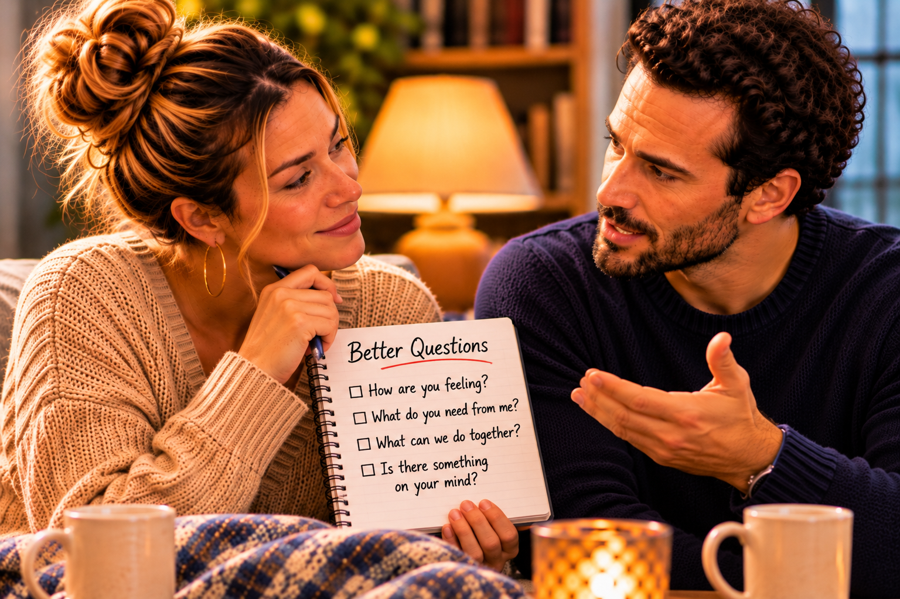

Sometimes the most important part of a conversation is not found in the words being spoken, but in the feelings someone is struggling to express.
A person may say that they are tired when what they really mean is that they feel overwhelmed. They may say that everything is fine when they are actually disappointed, or become unusually quiet because they do not know how to explain what has been bothering them.
We often listen for words because words are what we can immediately respond to. Someone tells us what happened, and we begin thinking about what to say next. We may offer an explanation, suggest a solution, or share our own experience because we believe that is what the conversation requires.
But sometimes people are not looking for an immediate solution. They are trying to communicate an experience they have not completely understood themselves.
Learning to hear what is not being said requires patience. It means recognizing that a person’s words may only represent part of what they are experiencing, while also remembering that we cannot automatically know what someone feels simply by observing their behavior.
We must be willing to listen, notice, and ask.
Listening Is More Than Waiting for Your Turn
There is a difference between hearing someone speak and genuinely listening to what they are communicating.
We can hear every word someone says while mentally preparing our response. We can recognize the details of their story without considering why those details matter to them. We can even remember exactly what was said during an argument while completely missing the emotion that started it.
This happens because listening requires more than attention. It requires the willingness to temporarily step outside our own perspective.
Imagine someone coming home after an exhausting day.
They put their belongings down, sit quietly, and respond to questions with very little enthusiasm. Their partner asks how the day went, and the answer is brief.
“It was fine.”
The partner may accept the response and continue with the evening. Perhaps they begin discussing dinner, household responsibilities, or something that needs to be done tomorrow.
But the person who came home may have been hoping for something different. They may have wanted someone to notice that they were overwhelmed, ask whether they needed to talk, or simply sit beside them without immediately expecting a conversation.
The difficulty is that none of those needs were clearly expressed.
The partner may not have realized anything was wrong. They may have interpreted the short response as a desire to be left alone.

Both people can miss an opportunity to connect because neither understands what the other is experiencing.
A thoughtful question might have changed the interaction.
“You seem a little quieter than usual. Was today difficult?”
That question does not assume an answer. It simply creates an opportunity for the other person to share what is happening.
Listening begins when we become more interested in understanding than in immediately responding.
The Meaning Behind Ordinary Words
People sometimes use simple words to describe complicated emotions.
“I’m tired” may mean that someone is physically exhausted, but it may also mean that they are emotionally overwhelmed by responsibilities they have not discussed.
“I’m frustrated” may describe anger, but underneath that frustration may be disappointment, fear, embarrassment, or the feeling that something important is being overlooked.
“I don’t care” may sound like indifference, but sometimes it is spoken by someone who cares so much that they are discouraged by how things have been going.
The words alone do not always provide the entire picture.
However, we must be careful not to assume that every statement hides a deeper meaning. Sometimes a person really is tired. Sometimes they genuinely do not want to discuss something at that moment. Sometimes the simplest explanation is the correct one.
The point is not to turn every sentence into a mystery that needs to be solved. It is to recognize when someone’s words and circumstances suggest that there may be more worth understanding.
Instead of deciding what someone means, we can ask.
“When you say you’re tired, do you mean physically, or has something been weighing on you?”
“Are you frustrated about what happened today, or is there something else we need to talk about?”
“Would you rather have some time to yourself, or would it help to talk?”
Questions like these communicate interest without forcing someone to disclose more than they are ready to share.
They also remind us that understanding someone is not about becoming an expert in interpreting their silence. It is about giving them room to explain their own experience.
When Someone Does Not Know How to Explain What They Feel
Not everyone has the ability to immediately identify and communicate their emotions.
Some people know they are upset but cannot explain exactly why. They may recognize that something feels different without understanding what has changed. They may become emotional during a conversation because the feelings they have been carrying are more complicated than they initially realized.
This can be especially difficult for someone who struggles with confrontation.
They may want to communicate honestly but become overwhelmed when the conversation begins. They may start with one concern and suddenly remember several others. They may cry, lose their train of thought, or struggle to find words that accurately describe what they are experiencing.
The person listening may become confused.
They may wonder why the conversation keeps changing or why something that seemed minor has become so emotional.
But emotions do not always arrive in an organized sequence.
Sometimes a small moment brings attention to a much larger concern. A person may begin discussing a missed phone call and eventually recognize that what they have really been feeling is a lack of reassurance. They may start by expressing frustration about an argument and discover that the deeper issue is their fear of repeating an experience from the past.
That does not mean every emotional reaction is automatically justified. It means we should allow enough room for people to understand what they are trying to communicate before deciding that their feelings do not make sense.
Sometimes the most helpful response is simply, “Take your time. I want to understand what you’re trying to tell me.”
Paying Attention Without Making Assumptions
There is value in noticing changes in someone we love.
We may recognize that they have become quieter, seem less interested in activities they usually enjoy, or respond differently when certain subjects come up. Those observations can help us recognize when a conversation may be needed.
But noticing a change does not mean we automatically know its cause.
A person who seems distant may be dealing with stress unrelated to the relationship. Someone who becomes quiet during an argument may be trying to control their emotions rather than expressing anger. Another person may be frustrated about something that has nothing to do with the individual sitting beside them.
If we immediately assign meaning to every change in behavior, we risk creating another misunderstanding.
We might assume someone is angry when they are actually overwhelmed. We might interpret a need for solitude as rejection, or mistake a lack of enthusiasm for a loss of affection.
The better approach is to recognize what we observe without pretending we know everything it means.
Instead of saying, “You’re acting like you don’t want to be around me,” we might say, “I’ve noticed you’ve been quieter lately. Is something bothering you?”
The difference is important.
The first statement assigns an intention. The second describes an observation and invites an explanation.
Understanding begins when we leave room for an answer we did not anticipate.
When Someone Is Asking to Be Seen
Sometimes people do not need a grand gesture. They need to feel that someone notices them.
They want their partner to recognize when they have had a difficult day, remember something important they mentioned earlier, or show interest in what they are experiencing.
These moments may seem ordinary, but they can communicate something meaningful.
A person who remembers an upcoming appointment, asks how an important conversation went, or notices that their partner has been carrying extra responsibilities is demonstrating attentiveness.
The value is not necessarily in the size of the gesture. It is in the consideration behind it.
At the same time, attentiveness should not become an expectation that someone must constantly monitor another person’s mood. No one can recognize every emotional change, and no one should be expected to anticipate every need.
There is a balance between being thoughtful and being responsible for another person’s entire emotional experience.
A healthy relationship encourages people to notice one another without requiring them to become mind readers.
Sometimes being seen begins with a simple question. Sometimes it requires putting a phone down, giving someone your attention, or remembering something they shared because it mattered to them.
Those moments remind people that they are not simply sharing space. They are participating in one another’s lives.
When Listening Becomes Difficult
Listening is not always easy, especially when the conversation involves something we have done wrong or something we strongly disagree with.
We may hear a concern and immediately feel the need to explain why the other person is mistaken. We may become uncomfortable when someone describes an experience that conflicts with our understanding of what happened.
We may even believe that listening without responding means agreeing with everything being said.
But listening and agreement are not the same thing.
You can listen to someone’s experience while recognizing that you remember the situation differently. You can acknowledge that they felt hurt without accepting an inaccurate accusation. You can ask questions before explaining your own perspective.
The challenge is remaining present long enough to understand what the other person is communicating.
Sometimes we interrupt because we fear that our side will never be heard. Sometimes we become defensive because we believe the conversation is becoming unfair. Sometimes we begin correcting details because we are uncomfortable with the larger concern.
When that happens, we can lose the opportunity to understand something important.
It may help to ask, “Can I make sure I understand what you’re saying before I respond?”
That small pause can prevent a conversation from becoming another argument about who remembers the situation correctly.
Once both people feel heard, they may find it easier to discuss where their perspectives differ.
The Importance of Asking Better Questions
Sometimes the quality of a conversation depends on the questions we ask.
Questions that begin with accusations often create defensiveness. Questions that communicate curiosity can open the door to a more meaningful exchange.
Compare these statements:
“Why are you always so distant?”
“Have you been feeling disconnected lately?”
“Why can’t you ever tell me what’s wrong?”
“Is there something making it difficult to talk about what you’re feeling?”
“Why do you make everything so complicated?”
“Can you help me understand what is making this situation difficult for you?”
The difference is not simply the choice of words. It is the intention behind them.
The first statements suggest that a conclusion has already been reached. The second statements invite someone to explain their experience.
Of course, asking questions does not guarantee that someone will respond honestly or respectfully. Both people must be willing to participate. But approaching a conversation with genuine curiosity gives understanding a better opportunity to develop.
It also requires listening to the answers rather than asking questions only to find another reason to disagree.
When Understanding Requires Patience
Some conversations take more than one attempt.
A person may need time to recognize what they feel, find the right words, or become comfortable discussing something they have avoided for a long time. Another may need time to process what they have heard before offering a thoughtful response.
Patience allows room for that process.
However, patience should not become an excuse for indefinite avoidance. If an important concern continually goes unaddressed, the relationship may remain stuck in the same pattern.
There is a difference between allowing someone time to gather their thoughts and accepting a permanent refusal to communicate.
It is also important to recognize that not every conversation will produce immediate clarity. Sometimes two people leave a discussion with more questions than answers. That does not necessarily mean they have failed.
The willingness to continue learning about one another can be more valuable than the expectation that every conversation must end with a complete solution.
Understanding develops through repeated experiences of listening, communicating, making adjustments, and demonstrating that the other person’s feelings matter.
When You Hear Something You Do Not Want to Hear
Learning to listen becomes especially important when someone tells us something uncomfortable.
They may say that they have been disappointed, that a behavior needs to change, or that something we consider ordinary has been hurting them.
Our first instinct may be to reject what we hear because we do not recognize ourselves in the description.
We may think, “That’s not who I am.”
But someone can experience the impact of our behavior differently from how we understand our own intentions.
Instead of immediately dismissing the concern, we can consider whether there is something worth examining.
Perhaps we have become distracted during conversations. Perhaps we have assumed that practical support is enough when the other person has been asking for emotional connection. Perhaps we have been so focused on defending our intentions that we have not recognized the effect of our responses.
Hearing something uncomfortable does not mean every criticism is accurate. It does mean we should be willing to consider information that may help us grow.
The same responsibility applies when someone raises a concern with us. We should be willing to hear their explanation rather than deciding that the conversation is over simply because we disagree.
Listening is not a sign of weakness. It is an opportunity to understand more than we knew before.
Looking Beneath the Surface
Think about how you listen to the people you love.
Do you give them your full attention, or are you often preparing your response before they finish speaking? When someone says they are fine, do you accept the answer without interest, or do you create an opportunity for them to explain if something is bothering them?
Consider whether you sometimes interpret behavior before asking what it means. Have you mistaken someone’s need for space as rejection, or assumed that their frustration was directed at you without knowing what else they may be experiencing?
Ask yourself whether you are comfortable hearing something that challenges your understanding of a situation.
If someone struggles to express themselves, can you offer patience without demanding an immediate explanation? If you need time to understand what they are saying, can you communicate that without making them feel dismissed?
Most importantly, remember that listening should never become an excuse to ignore harmful behavior. Understanding someone requires compassion, but it also requires discernment. You can listen carefully while maintaining boundaries and recognizing when accountability is necessary.
The goal is not to interpret every silence or discover hidden meanings in every sentence. It is to become more attentive to the person behind the words and more willing to ask what we do not understand.
Hearing the Person, Not Just the Words
There is something meaningful about being with someone who does not immediately turn every conversation into an opportunity to explain, correct, or defend.
They allow you to finish speaking. They ask questions because they genuinely want to understand. They remember the things you have shared, not because they are keeping a record of your words, but because your experiences matter to them.
That kind of listening creates room for honesty.
It allows people to communicate uncertainty without immediately being judged, express disappointment without automatically being labeled difficult, and admit that they do not know how to explain something without feeling embarrassed.
But listening must work both ways.
We cannot expect someone to hear everything we are trying to communicate while refusing to consider what they are experiencing. We cannot demand patience for our emotions while dismissing theirs. We cannot ask to be understood while making no effort to understand.
The responsibility is shared.
Sometimes the person beside us needs us to listen more carefully. Sometimes we need to speak more clearly. Sometimes both people need to slow down long enough to recognize that the conversation is not a competition.
Understanding grows when we become willing to hear more than the words we expected.
Because sometimes what a person is trying to say is not immediately clear, and sometimes what they need most is the opportunity to find the words without feeling that they must defend every emotion along the way.
And when we begin listening in that way, we may discover that the person we thought we understood has been trying to tell us something important all along.